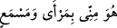

27. Bunun üzerine ona şöyle vahyettik: “Gözlerimizin önünde (muhafazamız
altında) ve bildirdiğimiz şekilde gemiyi yap. Bizim emrimiz gelip de sular coşup
yükselmeye başlayınca her cinsten birer çift ile, daha önce kendisi aleyhinde
hüküm verilmiş olanların dışındaki aileni gemiye al. Zulmetmiş olanlar konusunda
bana hiç yalvarma! Zira onlar kesinlikle boğulacaklardır.”
“Bunun üzerine ona şöyle vahyettik:” yâni gizlice bildirdik. Çünkü “ ve “ gizlice bildirmek demektir.
“Gözlerimizin önünde” muhafazamız altında “ve bildirdiğimiz” emrettiğimiz ve nasıl
yapılacağını öğrettiğimiz “şekilde gemiyi yap.”
Biz seni onu yaparken hata etmekten, senin yaptığını başkasının gelip bozmasından
onu koruruz. “ (Filanca benim gözümün önünde)” denir. Yâni ben onu koruyor
ve gözetiyorum demektir. Bu, “ (O, benim göreceğim ve işiteceğim
yerde)” sözüne benzer. Cüneyd (k.s.) der ki: “Kim müşâhede üzere amelde bulunursa
Allah ona rızâyı bağışlar. Nitekim Allah Teâlâ “Gözlerimizin önünde gemiyi yap.”
buyurur.”
Rivâyete göre Allah Teâlâ, Nuh (a.s.)’a gemiyi göğüs şeklinde yapmasını
vahyetmiştir.
et-Te’vîlâtü’n-Necmiyye’de der ki: “Biz ruh Nuh’una: ‘Şeriat gemisini filozofların ve
Brahmanların yaptığı gibi aklın nazarı ve hevânın emri ile değil bizim nazarımızın ve
emrimizin tasvibi ile yap.’ diye ilham ettik.
“Bizim emrimiz gelip de” azab emrimiz yaklaşıp da “sular coşup yükselmeye
başlayınca” tandır kaynayınca yani hanımın ekmek pişirirken ateşin içinden su çıkınca,
demektir. Nitekim Farsça tefsirde böyle denilmektedir.
“ şiddetli kaynamadır. Coştuğu zaman ateş hakkında, tencere ve öfke hakkında da
kullanılır. Tencerenin kaynamasına benzediği için kaynağa/menbaya “ denir.
“ ekmek fırını/tandır demektir. Alışılmışın dışında olarak kaynama ondan
başlamıştır. Kûfe mescidi onun yerine yapılmıştır. Nitekim rivâyet edildiğine göre Nuh
(a.s.)’a: “Tandırdan su kaynayınca sen ve beraberindekiler gemiye binin.” denildi. Bu
tandır Âdem (a.s.)’a âiddi. Ondan Nuh (a.s.)’a geçti. Tandırdan su kaynayınca hanımı
ona haber verdi ve gemiye bindiler.
“Her cinsten” her ümmetten ve her türden “birer çift” erkek ve dişi “ile, daha önce
kendisi aleyhinde” kâfirlerin helâk edileceğine dâir “hüküm verilmiş olanların” ki
oğlu Ken‘ân ve onun annesi Vâğile de onlardandı. “Dışındaki aileni” hanımını ve
çocuklarını “gemiye al.”